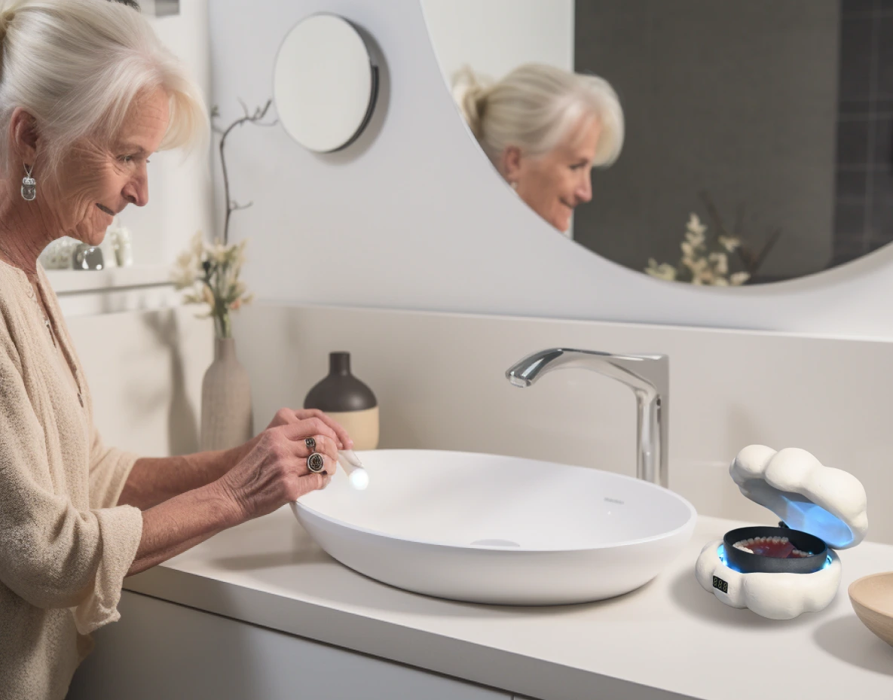
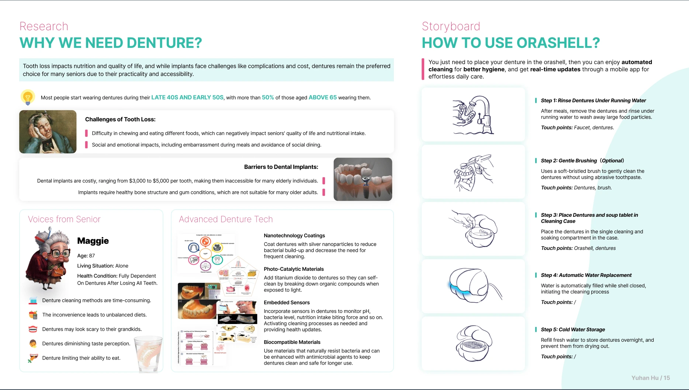
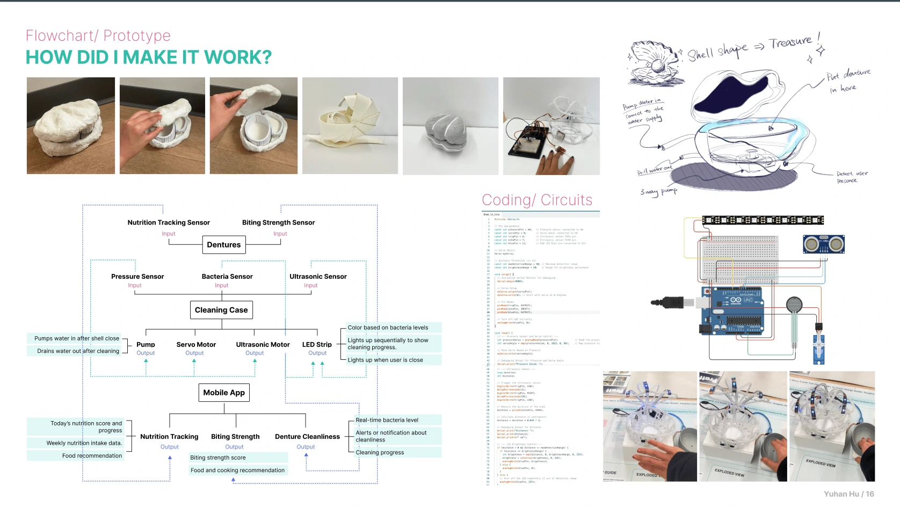
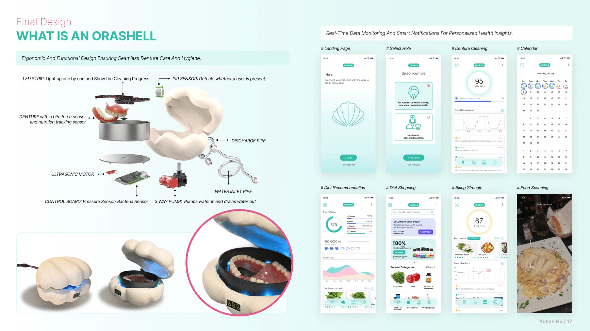

Orashell
A smart denture care system that combines automated cleaning with a companion app.
View full process
Overview
Orashell is a smart denture care system designed specifically for seniors and denture wearers. It combines automated cleaning technology with health monitoring capabilities, tracking bacteria levels, bite strength, and nutrition intake through embedded sensors. The companion mobile app provides real-time feedback and personalized health insights, making denture care effortless and health maintenance proactive.
Research

Key Findings
- Most people start wearing dentures in their late 40s and early 50s
- Over 60% of those aged above 65 are wearing dentures
- Tooth loss impacts nutrition, quality of life, and social confidence
- Dental implants are costly ($3,000-$5,000 per tooth)
User Insights
- Denture cleaning methods are time-consuming
- Inconvenience leads to unbalanced diets
- Fear of dentures being scary to grandchildren
- Diminishing taste perception and eating ability
How to Use Orashell
Orashell simplifies denture care with automated cleaning and real-time health monitoring through a mobile app.
Place Dentures
Place dentures in the cleaning case
Rinse Under Water
Run water to wash away large particles
Gentle Brushing
Use soft brush without toothpaste (Optional)
Automatic Cleaning
Water is replaced automatically during cleaning
Cold Storage
Fresh water overnight to prevent drying
Prototype & Technical Implementation

Sensors
• Nutrition Tracking Sensor
• Biting Strength Sensor
• Pressure Sensor
• Bacteria Sensor
• Ultrasonic Sensor
Actuators
• 3-way Pump (water control)
• Servo Motor (lid control)
• Ultrasonic Motor (cleaning)
• LED Strip (progress indicator)
Mobile App
• Real-time bacteria monitoring
• Nutrition tracking graphs
• Biting strength analysis
• Cleaning progress alerts
Final Design

Product Features
- 🦷Smart Denture Case: Embedded with bite force sensor and nutrition tracking sensor
- 💧Automatic Cleaning: LED strip shows progress, ultrasonic motor for deep cleaning
- 🔬Health Monitoring: PIR sensor detects bacteria presence, pressure and bacteria sensors in control board
- 🌊Water Management: 3-way pump controls water flow, discharge pipe, water inlet pipe
App Features
- 📱Landing Page: Quick access to cleaning status and health metrics
- 🩺Diet Tracking: Nutrition intake analysis and food recommendations
- 💪Biting Strength: Track bite force over time with visual graphs
- 🍽️Food Scanning: AI-powered food recognition for nutrition logging
Design Philosophy
Ergonomic and Functional Design Ensuring Seamless Denture Care and Hygiene.
The shell-shaped design creates a sense of treasure and protection, while the ergonomic form ensures comfortable handling for elderly users. The soft blue color provides a calming aesthetic that fits naturally in bathroom environments. Every component is carefully designed for ease of use, from the automatic lid control to the intuitive LED progress indicators, making advanced health monitoring accessible to all users regardless of technical expertise.
Impact & Future Vision
Current Impact
- Simplifies daily denture maintenance routine
- Provides health insights previously unavailable to denture wearers
- Reduces risk of bacterial infections through proper cleaning
- Helps maintain nutritional health through tracking
Future Development
- → Integration with healthcare providers for remote monitoring
- → AI-powered dietary recommendations based on bite strength
- → Community features for sharing recipes and tips
- → Predictive maintenance alerts for denture replacement